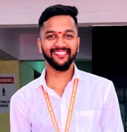

Ajay Nirmal
Contact Me
Summary
Seeking a challenging and dynamic role in the field of Computer Engineering where I can leverage my skills,
Eager to contribute to innovative projects, apply problem-solving abilities, and continue learning in a
collaborative and growth-oriented environment.
Education
- B.E in (Computer Engineering)
Yadavrao Tasgaonkar Institute of Engineering & Technology, Karjat
Aug 2021 – Present
CGPA: 10.00
- Diploma in (Computer Engineering)
viva College Of Diploma Engineering And Technology(MSBTE)
(2018-2021)
CGPA: 10.26
- Aadarsh Vidyalay Naringi
(SSC)
Mar- 2018
Percentage: 100.40%
Working Experience
Team Project:- Sentiment Analysis Of Tweets
- Led a comprehensive sentiment analysis project focusing on the analysis of tweets using natural
language processing techniques.
Term project:- Crypto Mining using NodeMCU
- Spearheaded a term project centered around crypto mining using NodeMCU, showcasing expertise in
Internet of Things (IoT) and blockchain technologies.
Technical Skill
- Python
- SQL
- MS Office Tools
EXTRA-CURRICULAR ACTIVITIES / SKILLS
My Hobbies